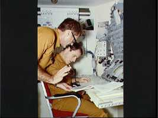

7/10/1973SearchToo Close for Comfort Scientist-Astronaut Edward G. Gibson, seated, and Astronaut William R. Pogue discuss a mission procedure at the Apollo Telescope Mount (ATM) display and control panel mockup in the one-G trainer for the Multiple Docking Adapter (MDA) at JSC. (NASA on The Commons)